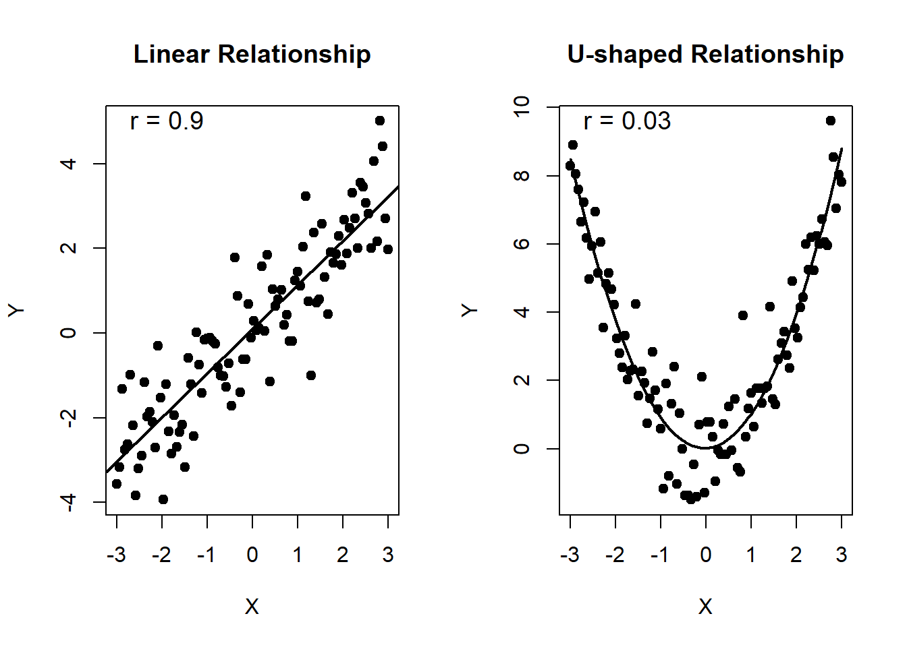
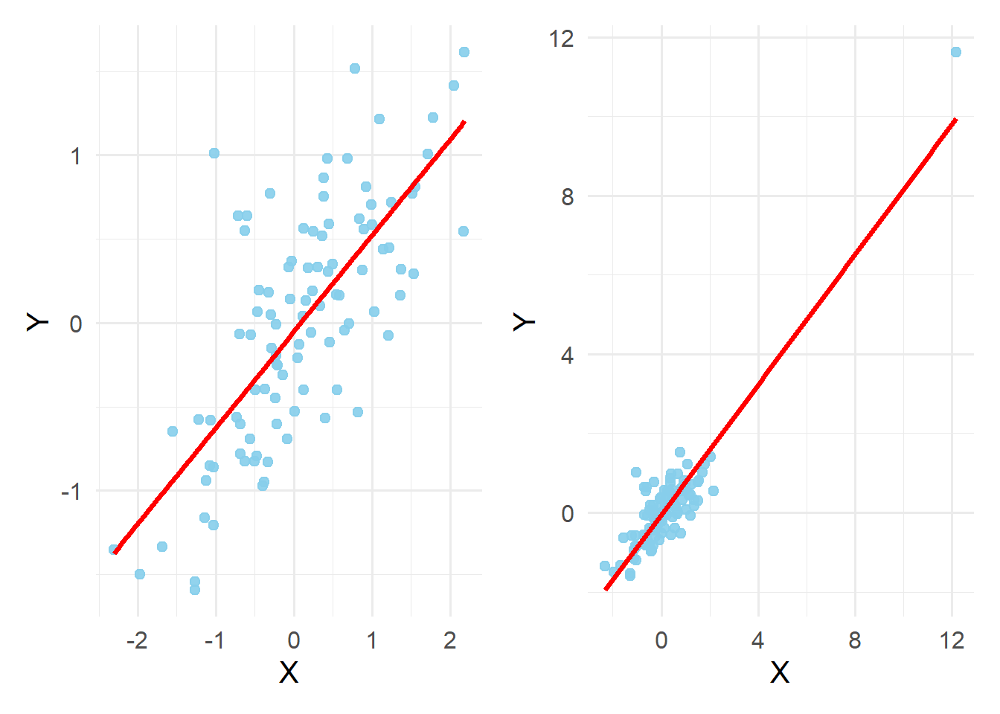
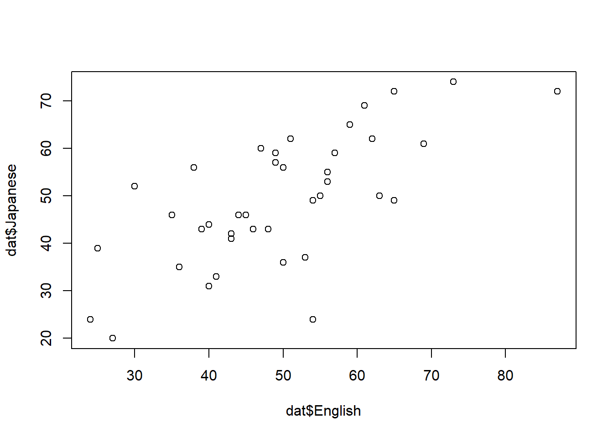
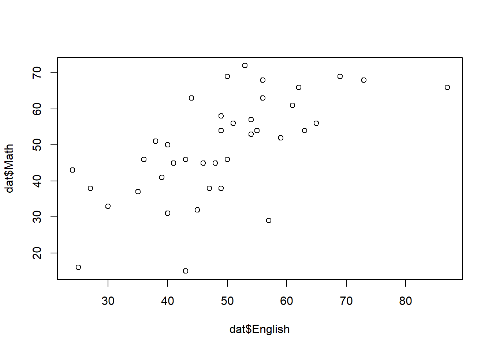

Week5: 相関分析
事前の確認
この講義のRプロジェクトを開いていますか？
英数字で名前を付けた本日の講義のファイルを作成しましたか？
- .Rでも.Rmdでもどちらでも大丈夫です。
今日の目標
- 相関分析に関する統計理論を数学的・概念的に理解できる。
- 相関分析をRで行い、その結果を解釈し報告することができる。
相関分析（Correlation analysis）とは
相関：2つのデータの間にある線形の関係の強さを示す。これを分析することを相関分析という
相関関係を確認する際、散布図で視覚的に確認、数値的に相関係数（Correlation coefficienct）が用いられる。
- 通常、ピアソンの（積率）相関係数（Pearson’s correlation coefficient, r）を指す。値は (-1r ) をとる。
相関係数は2変数の関係が線形になっている場合のみ使用できる。
相関係数の重要なパーツ
- 共分散（covariance）：各変数の平均からの偏差の積を平均したもの
[ s_{xy} = _{i=1}^{n} (x_i - {x})(y_i - {y}) ]
- 不偏共分散は以下の通り。相関係数を算出するRパッケージの
corは計算する際に、不偏分散を使用している。
[ s_{xy} = _{i=1}^{n} (x_i - {x})(y_i - {y}) ]
The denominator *n* − 1 is used which gives an unbiased estimator of the (co)variance for i.i.d. observations. - 相関係数を求める式
[ r_{xy} = ]
共分散（(S_{xy})）を2変数それぞれの標準偏差の積で割ったもの（共分散を基準化している）
- 基準化の理由として、定数倍などすると、値の大きさが変わってしまうため
相関関係の種類
正の相関（positive correlation）：右上がり。1つの変数が増加すると、もう片方も増加する
- 相関係数が正の値をとる
負の相関（negative correlation）：右下がり。1つの変数が増加すると、yが減少する。
- 相関係数が負の値をとる
- ピアソンの相関係数は外れ値に影響されやすい。あらかじめ散布図で外れ値がないかを確認する
- 以下の図では、左側の図のデータの一部（n = 2）を外れ値に変更した

- 右側の図の相関係数がわずか2つの外れ値によって大きくなっていることが分かる
cor(data2$x, data2$y, method = "pearson")[1] 0.7351905cor(data4$x, data4$y, method = "pearson")[1] 0.9108736相関係数の検定
- ほとんどの場合、母相関係数 ρ が0という帰無仮説を立てて行われる。
[ H_0 : ρ = 0 ]
- 検定統計量は t 分布に従うことを利用して検定が行われる。
[ t = ]
統計的に有意である場合、「母相関係数は0である」という帰無仮説を棄却し、「母相関係数は0ではない」という対立仮説を採択する。無相関検定とも呼ぶ。
- 母相関が0以外である帰無仮説を立てることもできるが、この場合検定統計量 t は 非心 t 分布に従い、 t 分布には従わない。
重要 無相関検定で有意差が得られても、母相関係数が0ではないということを示すだけであり、相関の強弱を示していないことに注意が必要。
ハンズオンセッション
データの読み込み
dat <- read.csv("sample_data/cor.csv")head(dat) ID English Math Japanese
1 1 56 63 53
2 2 55 54 50
3 3 24 43 24
4 4 57 29 59
5 5 49 38 57
6 6 27 38 20library(psych)
Attaching package: 'psych'The following objects are masked from 'package:ggplot2':
%+%, alphadescribe(dat$English) vars n mean sd median trimmed mad min max range skew kurtosis se
X1 1 40 49.45 13.19 49 49.31 11.86 24 87 63 0.31 0.27 2.09describe(dat$Math) vars n mean sd median trimmed mad min max range skew kurtosis se
X1 1 40 49.5 14.09 51.5 50.34 14.83 15 72 57 -0.49 -0.31 2.23describe(dat$Japanese) vars n mean sd median trimmed mad min max range skew kurtosis se
X1 1 40 49.35 13.41 49.5 49.62 14.08 20 74 54 -0.19 -0.61 2.12散布図の作成
plot(dat$English, dat$Math)
plot(dat$English, dat$Japanese)
psych::pairs.panels(dat[,2:4])
相関係数の算出
corr.test関数は、上述のcor関数を使用している。
psych::corr.test(dat[,2:4], method = "pearson")Call:psych::corr.test(x = dat[, 2:4], method = "pearson")
Correlation matrix
English Math Japanese
English 1.00 0.64 0.69
Math 0.64 1.00 0.43
Japanese 0.69 0.43 1.00
Sample Size
[1] 40
Probability values (Entries above the diagonal are adjusted for multiple tests.)
English Math Japanese
English 0 0.00 0.00
Math 0 0.00 0.01
Japanese 0 0.01 0.00
To see confidence intervals of the correlations, print with the short=FALSE optioncor.testを使用するとより詳細な結果が返ってくる
library(stats)
cor.test(dat$English, dat$Math, method = "pearson")
Pearson's product-moment correlation
data: dat$English and dat$Math
t = 5.1734, df = 38, p-value = 7.715e-06
alternative hypothesis: true correlation is not equal to 0
95 percent confidence interval:
0.4143074 0.7951314
sample estimates:
cor
0.6428501 相関係数の解釈
相関係数の大きさ
Cohenの基準と呼ばれるベンチマークがある。しかし、これはもともとすべての分野に適応することを意図したものではなく、行動科学分野の研究に基づき作成されたものであった。
- 小（small）： .10、中（Medium）：.30、大（Large）：.50
相関係数の値の大きさは文脈（e.g., 研究分野や研究対象）において解釈する必要がある。
- 例）リーディングのテスト得点とリスニングのテスト得点が r = .50の場合と、聞いた音を書きだすテストの得点と聴解のテスト得点が r = .50
第二言語習得研究における相関係数の目安として提示された例
“For correlation coefficients, we suggest that rs close to .25 be considered small, .40 medium, and .60 large. These values correspond roughly to the 25th, 50th, and 75th percentiles in our primary and meta-analytic samples.” (Plonsky & Oswald, 2014)
- 相関係数が小さい研究は査読の段階で削除されていたり、そもそも出版されずお蔵入りになっている場合もあるので注意。
因果関係の主張
相関分析では関係の強さの程度しか分からない。相関があることは必ずしも因果関係があることを示しているわけではない。
e.g., チョコレートの消費量とノーベル賞受賞者の数に相関がみられた
- チョコレートを沢山食べると優秀な人材が育つんだね（✖ チョコレート→ ノーベル賞）
第三の変数（共変量）による疑似相関の可能性もある
チョコの例も、「豊かさ」による疑似相関かもしれない
- 疑似相関の例：アイスクリームとビールの売り上げにおける「気温」、年収の高さと血圧における「年齢」
第三の変数を考慮した相関係数の計算は回帰分析の回で扱います
因果関係を調べるための条件
- ジョン・スチュアート・ミルは、以下の3つの条件を提示した
原因 X が結果 Y よりも時間的に先行している
原因 X と結果 Y に共変関係がある
他の因果的説明が排除されている
- つまり、時間的に先行する変数 X が他の変数からの影響を除外したうえで、変数 Y に関連があることを示す必要がある。
論文への記載
- 検証する変数が多い場合、表として提示すると分かりやすい。
- 特に焦点を当てたい個所を本文で言及する。
表 1
英語、数学、日本語のテスト得点の記述統計と相関係数、95%信頼区間
| Variable | M | SD | 1 | 2 |
|---|---|---|---|---|
| 1. English | 49.45 | 13.19 | ||
| 2. Math | 49.50 | 14.09 | .64** [.41, .80] | |
| 3. Japanese | 49.35 | 13.41 | .69** [.48, .82] | .43** [.14, .65] |
注. * p < .05. ** p < .01.
- 3つのテスト得点の間には、統計的有意な相関関係がみられた（表1）。英語と日本語の相関係数が最も高く（r = .69, 95% CI [.48-.82], t(38) = 5.90, p < .001）、数学と日本語の相関係数が最も低かった（r = .43, 95% CI [.14-.65], t(38) = 2.93, p = .006）。
次週までの課題
課題内容
小テストに向けて今回の内容を復習する。
配布されたデータセット（
pokemon_data.csv）をもとに、任意のデータに対して相関分析を行い、その解釈を本講義内で確認した書き方報告する。データの中身の確認や記述統計、データの可視化なども含めること。相関分析の結果をまとめた表は、必ずしも記載しなくてもよい。（再来週までに提出でOK）現時点での研究計画をまとめる。自分の研究に重要な先行研究でもOK。2の宿題とは別のR Markdownファイルにまとめて提出。
研究のキーワード3つ
研究の背景（簡単な先行研究のまとめなど）
- 日本語200字-400字程度でまとめる
研究課題
- 最大でも2つまで
研究の方法
どのようなデータをとるか（変数の説明、参加者の属性）
e.g., Group：Aはビデオを見ながら単語を学んだグループ、Bは単語リストで学んだグループ
e.g., 参加者：日本人大学生
何を検証したいか
- e.g., Group Bの方がAに比べ、統計的有意にテストの点数が高い
関連する研究の書誌情報を最低3つ挙げる
- e.g., Plonsky, L., & Oswald, F. L. (2014). How big is “big”? Interpreting effect sizes in L2 research. Language Learning, 64(4), 878-912.
提出方法
- TACT上で提出。
- 締め切りは今週の木曜日まで
参考文献
- 📚清水（編著）（2021）『心理学統計法 (放送大学教材 1638)』放送大学教育振興会
- 📚竹内・水本（編著）（2023）『外国語教育研究ハンドブック【増補版】―研究手法のより良い理解のために』松柏社
- 📚中村（2025）『心理学・教育学研究のための効果量入門―Rを用いた実践的理解』北大路書房
- 📚南風原（2002）『心理統計学の基礎―統合的理解のために』有斐閣アルマ
- 📚平井・岡・草薙（編著）（2022） 『教育・心理系研究のためのＲによるデータ分析―論文作成への理論と実践集』東京図書
- 📄Messerli, F. H. (2012). Chocolate consumption, cognitive function, and Nobel laureates. N Engl J Med, 367(16), 1562-1564.
- 📄Plonsky, L., & Oswald, F. L. (2014). How big is “big”? Interpreting effect sizes in L2 research. Language Learning, 64(4), 878-912.
- 💻おもしろ統計・120 疑似相関って知っていますか?